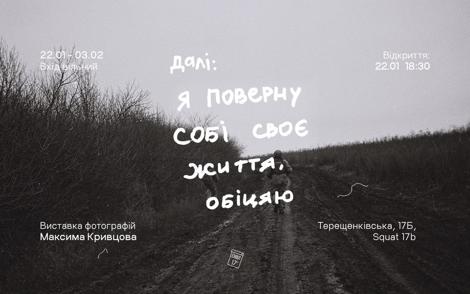

Пам'ять про Максима Кривцова
На честь загиблого на війні поета Максима Кривцова у Рівному назвали футбольне поле Народного клубу «Верес», що на вулиці Героїв Маріуполя.
У День пам’яті Захисників України Київська міська рада перейменувала сім вулиць та провулків на честь українських захисників, серед яких – провулок Достоєвського у Подільському районі, що тепер матиме ім’я українського поета та військовослужбовця Максима Кривцова.
Пам'ять загиблого військового і поета Максима Кривцова з Рівного вшанували у назві фіалки. Цей мініатюрний сорт вивів селекціонер з Дніпра Євген Рудницький і назвав його RUD-ДАЛІ — такий позивний був у Максима.
- 
Кінооб'єднання українських кінодокументалістів "Вавілон'13" екранізувало вірш Максима Кривцова, а одна з його пісень увійшла до фільму "Наші котики". Його пісні можна знайти на платформі YouTube, зокрема 3 його пісні співає Yurcash: "Жовтий скотч", "Панова висота", "Він у ЗСУ, вона в ТРО".
У День народження Максима Кривцова, 22 січня 2025 року, на вокзалах у містах України за згодою Укрзалізниці звучали фрагменти із його вірша "Я стану мандрівником".
Виставка у Харкові, памяті Мвксима Кривцова,відкрилась у кав’ярні Makers. Виставка складається з 24 фоторобіт військового і доповнена його поезіями. Така ж виставка юула організована у Києві. У Рівненській обласній бібліотеці відбувся пам’ятний захід під назвою «Далі буде», приурочений 35-річчю від дня народження Максима Кривцова.